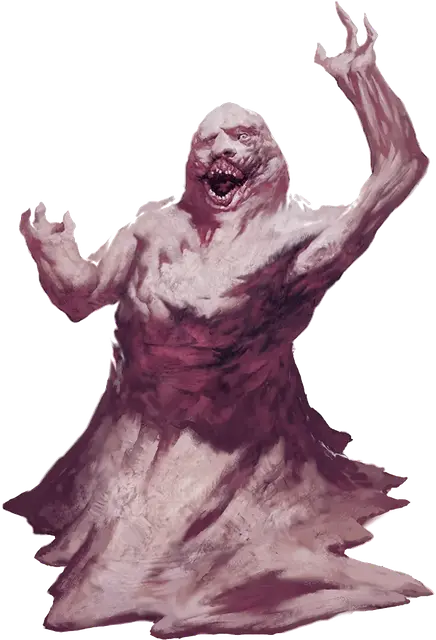

Лемур
Lemure
Среднее Исчадие (Дьявол), законно-злое

Класс Доспеха 7
Хиты 13 (3к8)
Скорость 15 футов
| мод | спас | ||
|---|---|---|---|
| СИЛ | 10 | +0 | +0 |
| ЛОВ | 5 | −3 | −3 |
| ТЕЛ | 11 | +0 | +0 |
| мод | спас | ||
|---|---|---|---|
| ИНТ | 1 | −5 | −5 |
| МДР | 11 | +0 | +0 |
| ХАР | 3 | −4 | −4 |
Сопротивление урону холод
Иммунитет к урону огонь, яд
Иммунитет к состояниям очарование, испуг, отравление
Чувства тёмное зрение 120 футов, пассивное Восприятие 10
Языки Инфернальный
Опасность 0
Бонус мастерства +2
Особенности
Языки. понимает Инфернальный, но не говорит.
Дьявольское зрение. Магическая тьма не мешает тёмному зрению лемура.
Адское возрождение. Лемур, умерший в Девяти Преисподних, возвращается к жизни с полными хитами через 1к10 дней, если только не был убит существом с добрым мировоззрением и находящимся под действием заклинания благословение [bless], и его останки не поливали святой водой.
Действия
Кулак. Рукопашная атака оружием: +3 к попаданию, досягаемость 5 футов, одна цель. Попадание: Дробящий урон 2 (1к4).
Описание
Лемуры появляются когда душа смертного испорчена злом и сослана навечно в Девять Преисподних. Самая низшая разновидность дьяволов, лемуры — отвратительные, бесформенные существа, обречённые страдать и мучиться до тех пор, пока не продвинутся до более высокой формы дьявола, например, до беса.
Лемуры напоминают собой расплавленную массу плоти с чем-то вроде головы и гуманоидного торса. Постоянная гримаса страдания искривляет лицо, его слабый рот постоянно двигается, несмотря на то, что он не может говорить.
См. дополнительно статью: "Бестиарий: Дьяволы"